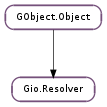

| static | get_default() |
| lookup_by_address(address, cancellable) | |
| lookup_by_address_async(address, cancellable, callback, *user_data) | |
| lookup_by_address_finish(result) | |
| lookup_by_name(hostname, cancellable) | |
| lookup_by_name_async(hostname, cancellable, callback, *user_data) | |
| lookup_by_name_finish(result) | |
| lookup_records(rrname, record_type, cancellable) | |
| lookup_records_async(rrname, record_type, cancellable, callback, *user_data) | |
| lookup_records_finish(result) | |
| lookup_service(service, protocol, domain, cancellable) | |
| lookup_service_async(service, protocol, domain, cancellable, callback, *user_data) | |
| lookup_service_finish(result) | |
| set_default() |
None
| Name | Parameters | Return | Description |
|---|---|---|---|
| reload | Emitted when the resolver notices that the system resolver configuration has changed. |
| Name | Type | Access |
|---|---|---|
| parent_instance | GObject.Object | r |
Bases: GObject.Object
Gio.Resolver provides cancellable synchronous and asynchronous DNS resolution, for hostnames (Gio.Resolver.lookup_by_address (), Gio.Resolver.lookup_by_name () and their async variants) and SRV (service) records (Gio.Resolver.lookup_service ()).
Gio.NetworkAddress and Gio.NetworkService provide wrappers around Gio.Resolver functionality that also implement Gio.SocketConnectable, making it easy to connect to a remote host/service.
| Returns: | the default Gio.Resolver. |
|---|---|
| Return type: | Gio.Resolver |
Gets the default Gio.Resolver. You should unref it when you are done with it. Gio.Resolver may use its reference count as a hint about how many threads it should allocate for concurrent DNS resolutions.
| Parameters: |
|
|---|---|
| Raises: | |
| Returns: | a hostname (either ASCII-only, or in ASCII-encoded form), or None on error. |
| Return type: |
Synchronously reverse-resolves address to determine its associated hostname.
If the DNS resolution fails, error (if non-None ) will be set to a value from Gio.ResolverError.
If cancellable is non-None, it can be used to cancel the operation, in which case error (if non-None ) will be set to Gio.IOErrorEnum.CANCELLED.
| Parameters: |
|
|---|
Begins asynchronously reverse-resolving address to determine its associated hostname, and eventually calls callback, which must call Gio.Resolver.lookup_by_address_finish () to get the final result.
| Parameters: | result (Gio.AsyncResult) – the result passed to your Gio.AsyncReadyCallback |
|---|---|
| Raises: | GLib.GError |
| Returns: | a hostname (either ASCII-only, or in ASCII-encoded form), or None on error. |
| Return type: | str |
Retrieves the result of a previous call to Gio.Resolver.lookup_by_address_async ().
If the DNS resolution failed, error (if non-None ) will be set to a value from Gio.ResolverError. If the operation was cancelled, error will be set to Gio.IOErrorEnum.CANCELLED.
| Parameters: |
|
|---|---|
| Raises: | |
| Returns: | a GLib.List of Gio.InetAddress, or None on error. You must unref each of the addresses and free the list when you are done with it. (You can use Gio.Resolver.free_addresses () to do this.) |
| Return type: |
Synchronously resolves hostname to determine its associated IP address(es). hostname may be an ASCII-only or UTF-8 hostname, or the textual form of an IP address (in which case this just becomes a wrapper around Gio.InetAddress.new_from_string ()).
On success, Gio.Resolver.lookup_by_name () will return a GLib.List of Gio.InetAddress, sorted in order of preference and guaranteed to not contain duplicates. That is, if using the result to connect to hostname, you should attempt to connect to the first address first, then the second if the first fails, etc. If you are using the result to listen on a socket, it is appropriate to add each result using e.g. Gio.SocketListener.add_address ().
If the DNS resolution fails, error (if non-None ) will be set to a value from Gio.ResolverError.
If cancellable is non-None, it can be used to cancel the operation, in which case error (if non-None ) will be set to Gio.IOErrorEnum.CANCELLED.
If you are planning to connect to a socket on the resolved IP address, it may be easier to create a Gio.NetworkAddress and use its Gio.SocketConnectable interface.
| Parameters: |
|
|---|
Begins asynchronously resolving hostname to determine its associated IP address(es), and eventually calls callback, which must call Gio.Resolver.lookup_by_name_finish () to get the result. See Gio.Resolver.lookup_by_name () for more details.
| Parameters: | result (Gio.AsyncResult) – the result passed to your Gio.AsyncReadyCallback |
|---|---|
| Raises: | GLib.GError |
| Returns: | a GLib.List of Gio.InetAddress, or None on error. See Gio.Resolver.lookup_by_name () for more details. |
| Return type: | [Gio.InetAddress] |
Retrieves the result of a call to Gio.Resolver.lookup_by_name_async ().
If the DNS resolution failed, error (if non-None ) will be set to a value from Gio.ResolverError. If the operation was cancelled, error will be set to Gio.IOErrorEnum.CANCELLED.
| Parameters: |
|
|---|---|
| Raises: | |
| Returns: | a GLib.List of GLib.Variant, or None on error. You must free each of the records and the list when you are done with it. (You can use GLib.List.free_full () with GLib.Variant.unref () to do this.) |
| Return type: |
Synchronously performs a DNS record lookup for the given rrname and returns a list of records as GLib.Variant tuples. See Gio.ResolverRecordType for information on what the records contain for each record_type.
If the DNS resolution fails, error (if non-None ) will be set to a value from Gio.ResolverError.
If cancellable is non-None, it can be used to cancel the operation, in which case error (if non-None ) will be set to Gio.IOErrorEnum.CANCELLED.
| Parameters: |
|
|---|
Begins asynchronously performing a DNS lookup for the given rrname, and eventually calls callback, which must call Gio.Resolver.lookup_records_finish () to get the final result. See Gio.Resolver.lookup_records () for more details.
| Parameters: | result (Gio.AsyncResult) – the result passed to your Gio.AsyncReadyCallback |
|---|---|
| Raises: | GLib.GError |
| Returns: | a GLib.List of GLib.Variant, or None on error. You must free each of the records and the list when you are done with it. (You can use GLib.List.free_full () with GLib.Variant.unref () to do this.) |
| Return type: | [GLib.Variant] |
Retrieves the result of a previous call to Gio.Resolver.lookup_records_async (). Returns a list of records as GLib.Variant tuples. See Gio.ResolverRecordType for information on what the records contain.
If the DNS resolution failed, error (if non-None ) will be set to a value from Gio.ResolverError. If the operation was cancelled, error will be set to Gio.IOErrorEnum.CANCELLED.
| Parameters: |
|
|---|---|
| Raises: | |
| Returns: | a GLib.List of Gio.SrvTarget, or None on error. You must free each of the targets and the list when you are done with it. (You can use Gio.Resolver.free_targets () to do this.) |
| Return type: |
Synchronously performs a DNS SRV lookup for the given service and protocol in the given domain and returns an array of Gio.SrvTarget. domain may be an ASCII-only or UTF-8 hostname. Note also that the service and protocol arguments do not include the leading underscore that appears in the actual DNS entry.
On success, Gio.Resolver.lookup_service () will return a GLib.List of Gio.SrvTarget, sorted in order of preference. (That is, you should attempt to connect to the first target first, then the second if the first fails, etc.)
If the DNS resolution fails, error (if non-None ) will be set to a value from Gio.ResolverError.
If cancellable is non-None, it can be used to cancel the operation, in which case error (if non-None ) will be set to Gio.IOErrorEnum.CANCELLED.
If you are planning to connect to the service, it is usually easier to create a Gio.NetworkService and use its Gio.SocketConnectable interface.
| Parameters: |
|
|---|
Begins asynchronously performing a DNS SRV lookup for the given service and protocol in the given domain, and eventually calls callback, which must call Gio.Resolver.lookup_service_finish () to get the final result. See Gio.Resolver.lookup_service () for more details.
| Parameters: | result (Gio.AsyncResult) – the result passed to your Gio.AsyncReadyCallback |
|---|---|
| Raises: | GLib.GError |
| Returns: | a GLib.List of Gio.SrvTarget, or None on error. See Gio.Resolver.lookup_service () for more details. |
| Return type: | [Gio.SrvTarget] |
Retrieves the result of a previous call to Gio.Resolver.lookup_service_async ().
If the DNS resolution failed, error (if non-None ) will be set to a value from Gio.ResolverError. If the operation was cancelled, error will be set to Gio.IOErrorEnum.CANCELLED.
Sets resolver to be the application’s default resolver (reffing resolver, and unreffing the previous default resolver, if any). Future calls to Gio.Resolver.get_default () will return this resolver.
This can be used if an application wants to perform any sort of DNS caching or “pinning”; it can implement its own Gio.Resolver that calls the original default resolver for DNS operations, and implements its own cache policies on top of that, and then set itself as the default resolver for all later code to use.